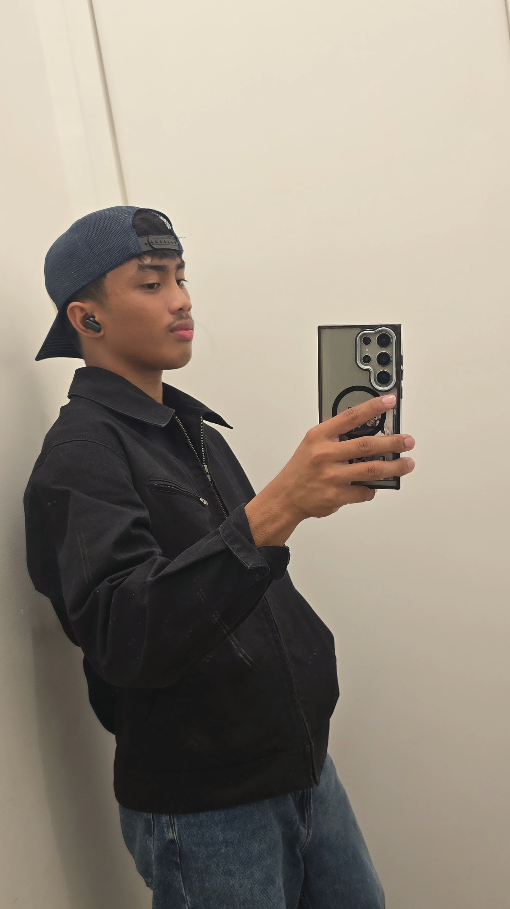

I am Ethan Maurice B. Tupas. I am currently pursuing a Bachelor of Science in Information Technology degree at the University of San Agustin. My goal is to become a Computer Hardware Specialist and a Network Engineer. I am deeply motivated in pursuing this career because I find joy in fixing complicated stuff and technology grows faster every day. I want to challenge myself to adapt in this high-paced technology environment. My other reason is that computers amaze me; it deepens my curiosity. Choosing Information Technology as my degree stems from a deep passion for digital transformation and problem-solving. Pursuing computer hardware opens doors to a rapidly growing field driving modern technology, from AI servers to consumer electronics. You’ll develop invaluable hands-on technical skills in system architecture, troubleshooting, and microelectronics. With high industry demand, strong earning potential, and the ability to solve tangible engineering challenges, it’s a future-proof career path for anyone passionate about how tech works inside out.
This website shows a different set of rules or guidelines we should follow in cyberspace. This website is created through Google Sites.
Link for the WebsiteThis website shows Spotify features. This website is created through Google Sites.
Link for the Website